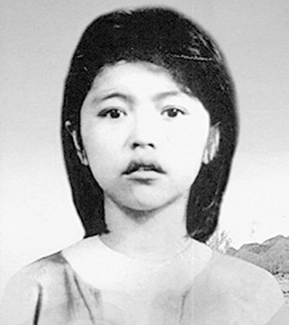

Chị Võ Thị Sáu tên thật là Nguyễn Thị Sáu sinh năm 1935, quê ở xã Phước Thọ, quận Đất Đỏ, tỉnh Bà Rịa, nay thuộc xã Phước Long Thọ, huyện Đất Đỏ, tỉnh Bà Rịa - Vũng Tàu. Năm 1947, công an quận đã quyết định kết nạp chị vào Đội Công an xung phong quận Đất Đỏ khi mới 14 tuổi.
Ngày 14 tháng 7 năm 1948, Võ Thị Sáu mai phục ném lựu đạn về phía khán đài cuộc mít tinh kỷ niệm quốc khánh Pháp do tên tỉnh trưởng Lê Thành Tường tổ chức tại Đất Đỏ. Tháng 2-1950, chị dẫn đầu một tổ, dùng lựu đạn tập kích diệt hai tên Cả Day và Cả Suốt, không may chị bị địch bắt. Mười lăm tuổi, chị Sáu đã bước vào nhà tù Bà Rịa.
Ba tháng sau, chúng đưa Sáu về giam ở Khám Lớn Sài Gòn. Tại đây, Sáu được chúng cho vào ban nấu bếp của nhà tù. Nhờ vậy, chị đã làm tốt nhiệm vụ mà cơ sở bí mật của cách mạng trong tù giao phó. Đó là thông tin chỉ thị từ cơ sở đến từng phòng giam. Không may công việc này bại lộ vì có kẻ phản bội khai báo. Hắn cung cấp cho kẻ thù toàn bộ hoạt động của chị, vì vậy vào tháng 5 năm 1951, chị bị thực dân Pháp đưa ra tòa xét xử và bị kết án tử hình. Nhưng kết án tử hình một cô bé 16 tuổi là điều khó chấp nhận. Do đó, chúng đã sửa lại trong hồ sơ là chị sinh năm 1933 cho đúng với luật “công pháp quốc tế”.
Ngày 21 tháng 01 năm 1952, chị bị đưa ra Côn Đảo với số tù G.267 và bị giam riêng trong xà limSở Cò (nay là trường mẫu giáo Măng Non, huyện Côn Đảo). Đêm 22 tháng 01 năm 1952, chị được Chi bộ nhà tù kết nạp vào Đảng Cộng sản Việt Nam.
Giặc Pháp đưa chị Võ Thị Sáu ra pháp trường xử bắn. Tên chánh án hỏi chị: “Còn yêu cầu gì trước khi chết?”. Chị nói: “Không cần bịt mắt tôi. Hãy để cho đôi mắt tôi được nhìn đất nước thân yêu đến giây phút cuối cùng và tôi có đủ can đảm để nhìn thẳng vào họng súng của các người!”. Nói xong, chị bắt đầu cất cao tiếng hát. Chị hát bài Tiến quân ca.. Khi tên chỉ huy ra lệnh cho bọn lính chuẩn bị nổ súng thì chị lập tức ngưng hát và hô vang: “Đả đảo thực dân Pháp!”. “Việt Nam độc lập muôn năm!”. “Hồ Chủ tịch muôn năm!”. Chị Sáu vẫn ngẩng cao đầu và tiếng hô cuối cùng của chị không mất đi mà vang vọng mãi đến thiên thu.
Bài viết của Hồ Trọng Việt
Học sinh lớp 10A2 - Trường THPT Nguyễn Công Trứ